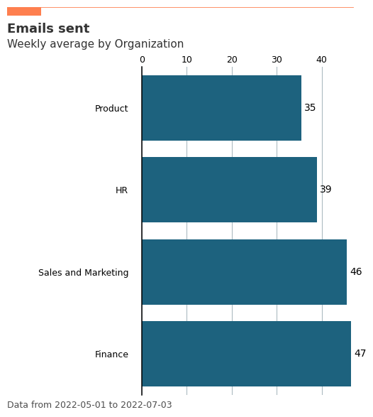
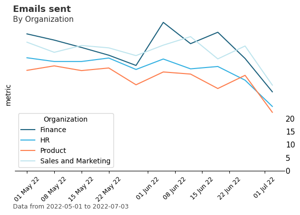
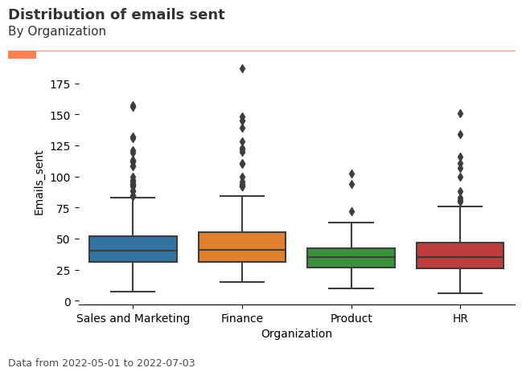
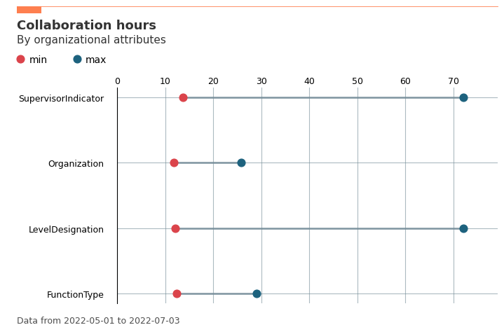
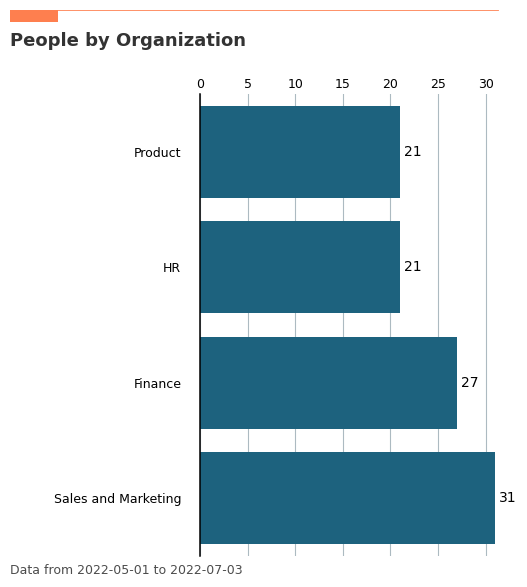

Demo Notebook for the vivainsights Python package¶
This notebook provides a demo for the vivainsights package. For more information about the package, please see:
Loading the library and dataset¶
The following code loads the library ‘vivainsights’, and the function load_pq_data() loads a sample Person Query data to the environment. The first five rows of the data looks like the following:
[1]:
import vivainsights as vi
# load in-built datasets
pq_data = vi.load_pq_data() # load and assign in-built person query
[2]:
import warnings
warnings.filterwarnings('ignore')
[3]:
pq_data.head()
[3]:
| Unnamed: 0 | PersonId | MetricDate | After_hours_call_hours | After_hours_chat_hours | After_hours_collaboration_hours | After_hours_email_hours | After_hours_meeting_hours | After_hours_scheduled_call_hours | After_hours_unscheduled_call_hours | ... | Working_hours_meeting_hours | Working_hours_scheduled_call_hours | Working_hours_unscheduled_call_hours | LevelDesignation | Layer | SupervisorIndicator | Organization | FunctionType | WeekendDays | IsActive | |
|---|---|---|---|---|---|---|---|---|---|---|---|---|---|---|---|---|---|---|---|---|---|
| 0 | 1 | a6afe34c-8524-32d3-a368-1517b29b68cd | 2022-05-01 | 0.0 | 0.0 | 18.675938 | 0.722722 | 18.25 | 0.0 | 0 | ... | 19.50 | 0 | 0 | Manager | 3 | Manager | Sales and Marketing | G_and_A | [SUNDAY, SATURDAY] | True |
| 1 | 2 | d6368140-9312-380b-bbc9-9a32bcef4b83 | 2022-05-01 | 0.0 | 0.0 | 4.827803 | 0.925556 | 4.00 | 0.0 | 0 | ... | 8.75 | 0 | 0 | Support | 3 | Individual Contributor | Finance | Sales | [SUNDAY, SATURDAY] | True |
| 2 | 3 | 60bf99b0-65fd-3c3f-94fb-8ceb451d59e7 | 2022-05-01 | 0.0 | 0.0 | 1.497806 | 0.812806 | 0.75 | 0.0 | 0 | ... | 12.50 | 0 | 0 | Support | 3 | Individual Contributor | Product | IT | [SUNDAY, SATURDAY] | True |
| 3 | 4 | 93fddd74-3667-392b-ba5a-92d855772cb0 | 2022-05-01 | 0.0 | 0.0 | 59.265892 | 2.283668 | 59.00 | 0.0 | 0 | ... | 28.50 | 0 | 0 | Director | 2 | Manager+ | Sales and Marketing | Analytics | [SUNDAY, SATURDAY] | True |
| 4 | 5 | 53183116-2cb2-32ee-9042-d62eb7061407 | 2022-05-01 | 0.0 | 0.0 | 2.146806 | 0.520167 | 1.75 | 0.0 | 0 | ... | 7.50 | 0 | 0 | Support | 3 | Individual Contributor | Sales and Marketing | IT | [SUNDAY, SATURDAY] | True |
5 rows × 155 columns
Run visuals¶
There are currently several visuals that you can run with the Person Query dataset. The first of these that you can run is a bar plot, which produces a person-average (first averaging by person, then averaging by group) for the groups in question. The parameters that you can provide to create_bar() are:
metric- metric to analyzehrvar- grouping HR variablemingroup- minimum group size to display
[4]:
plot_bar = vi.create_bar(data=pq_data, metric='Emails_sent', hrvar='Organization', mingroup=5)

You can also ask the function to return a summary table by specifying the parameter return_type. This summary table can be copied to a clipboard with export().
[5]:
tb = vi.create_bar(data=pq_data, metric='Emails_sent', hrvar='Organization', mingroup=5, return_type='table')
print(tb)
Organization metric n
0 Finance 46.566667 27
3 Sales and Marketing 45.625806 31
1 HR 38.971429 21
2 Product 35.433333 21
[6]:
vi.export(tb)
Data frame copied to clipboard.
You may paste the contents directly to Excel.
[6]:
()
Here are some other visual outputs, and their accompanying summary table outputs:
[7]:
plot_line = vi.create_line(data=pq_data, metric='Emails_sent', hrvar='Organization', mingroup=5, return_type='plot')

[8]:
vi.create_line(data=pq_data, metric='Emails_sent', hrvar='Organization', mingroup=5, return_type='table').head()
[8]:
| MetricDate | Organization | metric | n | |
|---|---|---|---|---|
| 0 | 2022-05-01 | Finance | 52.370370 | 27 |
| 1 | 2022-05-01 | HR | 43.238095 | 21 |
| 2 | 2022-05-01 | Product | 38.428571 | 21 |
| 3 | 2022-05-01 | Sales and Marketing | 49.193548 | 31 |
| 4 | 2022-05-08 | Finance | 50.000000 | 27 |
[9]:
plot_box = vi.create_boxplot(data=pq_data, metric='Emails_sent', hrvar='Organization', mingroup=5, return_type='plot')

[10]:
vi.create_boxplot(data=pq_data, metric='Emails_sent', hrvar='Organization', mingroup=5, return_type='table')
[10]:
| index | group | mean | median | sd | min | max | n | |
|---|---|---|---|---|---|---|---|---|
| 0 | 0 | Finance | 46.566667 | 39.6 | 21.739330 | 28.5 | 134.5 | 27 |
| 1 | 1 | HR | 38.971429 | 36.0 | 16.793366 | 22.1 | 98.9 | 21 |
| 2 | 2 | Product | 35.433333 | 33.4 | 6.608505 | 29.6 | 59.5 | 21 |
| 3 | 3 | Sales and Marketing | 45.625806 | 38.4 | 20.387577 | 24.4 | 119.0 | 31 |
Exploratory data analysis¶
Some functions are designed to perform a rapid exploratory analysis of the dataset, and one of these functions is create_rank(). With create_rank(), you can explore all the groupings within your population and rank them with respect to a metric you choose.
[11]:
vi.create_rank(
data=pq_data,
metric='Collaboration_hours',
hrvar = ['Organization', 'FunctionType', 'LevelDesignation', 'SupervisorIndicator'],
mingroup=5,
return_type = 'table'
)
[11]:
| hrvar | attributes | metric | n | |
|---|---|---|---|---|
| 2 | SupervisorIndicator | Manager+ | 72.043614 | 6 |
| 0 | LevelDesignation | Director | 72.043614 | 6 |
| 5 | FunctionType | Marketing | 28.992283 | 12 |
| 1 | SupervisorIndicator | Manager | 26.884630 | 11 |
| 2 | LevelDesignation | Manager | 26.884630 | 11 |
| 3 | Organization | Sales and Marketing | 25.765574 | 31 |
| 1 | LevelDesignation | Junior IC | 21.447389 | 10 |
| 7 | FunctionType | Sales | 21.294210 | 11 |
| 2 | FunctionType | Engineering | 19.436244 | 20 |
| 0 | FunctionType | Analytics | 18.348926 | 12 |
| 1 | Organization | HR | 17.775103 | 21 |
| 4 | FunctionType | IT | 17.698799 | 11 |
| 3 | FunctionType | G_and_A | 17.478766 | 6 |
| 0 | Organization | Finance | 16.694477 | 27 |
| 1 | FunctionType | Customer_Service | 15.080618 | 12 |
| 0 | SupervisorIndicator | Individual Contributor | 13.752266 | 83 |
| 4 | LevelDesignation | Support | 12.937993 | 53 |
| 6 | FunctionType | R_and_D | 12.365513 | 16 |
| 3 | LevelDesignation | Senior IC | 12.062528 | 20 |
| 2 | Organization | Product | 11.746185 | 21 |
This can be visualized as well:
[12]:
plot_rank = vi.create_rank(
data=pq_data,
metric='Collaboration_hours',
hrvar = ['Organization', 'FunctionType', 'LevelDesignation', 'SupervisorIndicator'],
mingroup=5,
return_type = 'plot'
)

Validating / exploring the data¶
Since HR variables or organizational attributes are a key part of the analysis process, it is also possible to perform some exploration or validation before we begin the analysis.
[13]:
plot_hrcount = vi.hrvar_count(data=pq_data, hrvar='Organization', return_type='plot')

[14]:
vi.hrvar_count(data=pq_data, hrvar='Organization', return_type='table')
[14]:
| Organization | n | |
|---|---|---|
| 3 | Sales and Marketing | 31 |
| 0 | Finance | 27 |
| 1 | HR | 21 |
| 2 | Product | 21 |